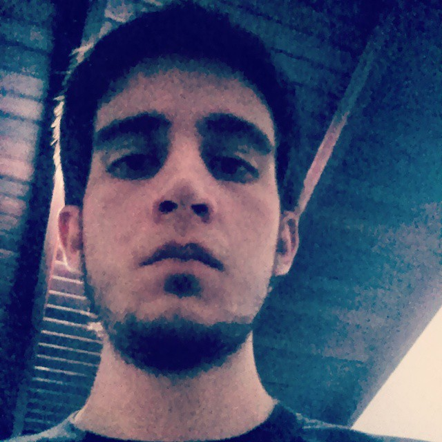
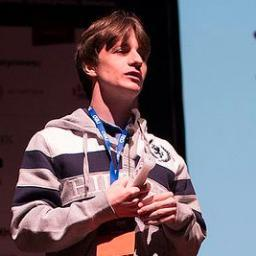
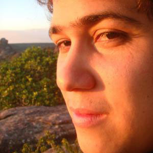
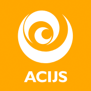
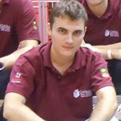
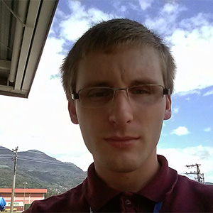

Sobre
O GDG Jaraguá do Sul realiza em parceria com acadêmicos do curso de Bacharelado de Sistema de Informação do Centro Universitário Católica de Santa Catarina, a Semana Acadêmica BSI 2014.
Serão 4 dias de muita informação e aprendizado para acadêmicos e pessoas da comunidade.
Mais informações pelo email: lucas@agtlucas.com.
Localização
R. dos Imigrantes, 500 - Rau. Jaraguá do Sul, Santa Catarina
Palestrantes
-

14/10 - 18h50 Keynote
Lucas da Silva @_agtlucas
Criador e organizer do GDG Jaraguá do Sul, acadêmico do curso de Bacharelado em Sistemas da Informação, Web Developer na AWLKA.
-

14/10 - 19h00 Seu trabalho é inventar o futuro
Thiago Pradi @thiagopradi
Desenvolvedor Ruby / Rails desde 2008, já trabalhou nos mais diversos projetos. Atualmente, é Desenvolvedor de Software na JobScore, Mestrando em Ciência da Computação na UFPR e Pesquisador no grupo de pesquisa IMAGO.
-

14/10 - 20h30 Semântica e vocabulários semânticos
Rômulo Jales @romulojales
Computer Engineer, focus on software engineer, actually working at globo.com, largest website portal in Brazil.
-
15/10 - 19h00 Mantendo seu software sob controle
Ione Souza Junior @ionixjunior
Ione Souza Junior, 27 anos, graduado em Análise e Desenvolvimento de Sistemas pela Católica SC e especializado em Tecnologias Web pela PUC PR. Desenvolvedor há 8 anos, curioso e apreciador de assuntos relacionados a qualidade e testes de software.
-
15/10 - 20h15 Node.js - Um novo universo
Carlos Alexandre Fuechter @alexandref93
Web Developer Full-Stack nas horas livres e desenvolvedor Front-End na Agência Milagro, formado em Tecnologia e Análise de Desenvolvimento de Sistemas.
-
15/10 - 21h00 Cloud computing
Eduardo Freitas
Bacharel em Informática pela UFPR e pós-graduação em Gestão de Negócio pela FAE Business School. Trabalhei como programador, analista de suporte, pré-venda, consultor de negócio na area de inovação e marketing, gerente de vendas de soluções de TI e atualmente como gerente de desenvolvimento de mercado para soluções em Cloud computing da IBM Brasil.
-

16/10 - 19:00 Como criar uma Startup de sucesso
Núcleo de Inovação Digital e Startups
Núcleo de Inovação Digital e Startups.
-
17/10 - 19h00 O universo das Startups
Natã Barbosa @natabarbosa
Natã é aluno da sexta fase do curso de Bacharelado em Sistemas de Informação na Católica de Santa Catarina em Joinville. Já participou de vários projetos web e mobile desde 2008, quando iniciou suas atividades como desenvolvedor. Dentre os projetos mais importantes estão uma medalha de ouro em competição internacional de web design em Londres, laboratório de pesquisa e desenvolvimento em realidade virtual 3D na Cingapura e estudos em sistemas de informação durante 1 ano em universidade dos EUA. Hoje Natã é analista de sistemas na NeoGrid e ao mesmo tempo atua em projetos de consultoria de qualidade de software e projeto de pesquisa da universidade em qual estudou nos EUA.
-

17/10 - 20h30 IoT - Internet das coisas
João Pedro Schmitt
Acadêmico formado em Técnico em Redes de Computadores pelo Senai e cursando Bacharelado em Sistemas de Informação pelo Centro Universitário Católica de SC - Jaraguá do Sul, atualmente empregado como Desenvolvedor de Sistemas WEB de engenharia pela WEG e pesquisador em Sistemas Robóticos/Embarcados pelo Centro Universitário Católica de SC.
-

17/10 - 20h30 IoT - Internet das coisas
Joe Jonas Vogel
Graduando de Bacharelado em Sistemas de Informação pelo Centro Universitário Católica de Santa Catarina. Pesquisador em Sistemas Roboticos/Embarcados no Centro Universitário Católica de Santa Catarina. Estagiário em Engenharia de Software na WEG Equipamentos Eletrônicos S.A.
Agenda
| Hora | Slot | Descrição |
|---|---|---|
| 14/10 - 18h50 | Keynote AWLKA | Apresentação da Semana Acadêmica. |
| 14/10 - 19h00 | Seu trabalho é inventar o futuro JobScore | Com a ascensão da tecnologia no mundo moderno, cada vez mais ela modificando o nosso cotidiano. Porém, como nós, os profissionais de tecnologia, podemos trabalhar para que essa tecnologia se converta em um futuro melhor? Nessa palestra, introduzirei alguns conceitos sobre pesquisas, produtos e ideias da área de tecnologia que estão mudando o mundo para melhor. Além disso, serão apresentadas algumas dicas sobre como você pode participar dessa revolução. |
| 14/10 - 20h30 | Semântica e vocabulários semânticos Globo.com | Workshop sobre como usar vocabulários semânticos para construir sistemas. O que é semântica? O que são vocabulários semânticos? SparQL e virtuoso, tudo isso e muito mais! |
| 15/10 - 19h00 | Mantendo seu software sob controle Priori | A palestra tem o objetivo de mostrar algumas ferramentas voltadas à qualidade de software aplicadas ao PHP. |
| 15/10 - 20h15 | Node.js - Um novo universo Milagro | Palestra sobre a plataforma Node.js. O que é? O que ela é capaz de fazer? O seu potencial no mercado. Sua influência no JavaScript. |
| 15/10 - 21h00 | Cloud computing IBM Brasil | O mercado de TI passou por varias transformações e a IBM acompanhou e liderou várias delas. Hoje, aplicativos em cloud, dispositivos moveis, social apps e analise de dados trazem uma nova realidade para os negócios e profissionais do mercado de tecnologia da informação. |
| 16/10 - 19:00 | Como criar uma Startup de sucesso ACIJS | Conheça a estrutura e as ações do Núcleo de Inovação Digital e Startups da ACIJS-APEVI e alguns cases de sucesso. A palestra contará com a presença do fundador e CEO do Conta Azul, Vinicius Roveda, além da presença de outros empreendedores da região. |
| 17/10 - 19h00 | O universo das Startups NeoGrid | Nesta palestra, Natã vai nos contar um pouco sobre o mundo das startups, como foi seu processo na aceleradora de startups 'Student Sandbox' e detalhes sobre a sua visita ao Vale do Silício. |
| 17/10 - 20h30 | IoT - Internet das coisas WEG | Nesta palestra, João e Joe farão um overview sobre IoT. |
| 17/10 - 20h30 | IoT - Internet das coisas WEG | Nesta palestra, João e Joe farão um overview sobre IoT. |